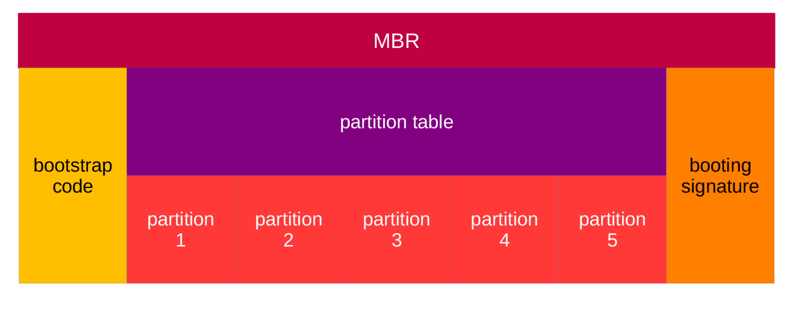
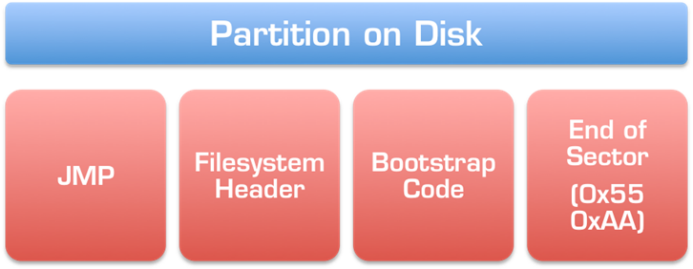

4.2 Operating System and Hardware Interfaces for Desktops and Laptops
4.2.1 BIOS Interface Program
Early computers possessed proprietary boot routines; for instance, the IBM PC hardcoded its bootloader directly into the non-volatile read-only memory (ROM) hosting the BIOS. After performing the necessary power-on self-tests and initial system provisioning, this integrated routine read the operating system from an external floppy disk or hard drive into memory for execution.
Conversely, the primary bootloader of a modern computer exists as an independent, standalone binary entity. Rather than residing within the machine's motherboard-bound non-volatile flash storage chips, it is saved on the designated boot device itself. The BIOS program stored in the computer's onboard non-volatile memory initializes baseline hardware subsystems so that the target storage controllers function correctly. It then reads a block of raw sector data from the Master Boot Record (MBR) region—the absolute first sector—of the media. This sequence determines whether a valid stage-1 boot string is present and resolves its physical deployment location and layout footprint. Once the BIOS confirms the presence of a viable bootloader payload on the media, it loads the binary into random-access memory (RAM) and jumps to its entry point to begin execution.
4.2.2 UEFI Interface
UEFI is an acronym for the Unified Extensible Firmware Interface, which defines the standard software interface layer bridging the platform firmware with the client operating system. The UEFI specification standardizes platform-related system data tables and formalizes an array of discrete services—categorized into boot services and runtime services—provided by the firmware to the operating system kernel. Under this architecture, the operating system loader (OS Loader) can safely abstract away low-level silicon and platform details, relying entirely on these abstract data frameworks and firmware-exported calls to successfully initialize and load the operating system.
An operating system boot process compliant with the UEFI specification no longer depends on physical, hardcoded partition boot sectors. Instead, an integrated, non-volatile Boot Manager calls firmware-provided runtime infrastructure to fetch the explicit file pathways and metadata matching the target bootloader. The platform firmware then invokes its internal UEFI boot service function LoadImage() to load both the primary operating system bootloader (Boot Loader) and any necessary standalone UEFI hardware drivers into physical RAM. Once loaded, execution jumps directly to the entry point address exposed by the operating system bootloader, driving kernel initialization forward.
Because UEFI provides native backward compatibility for legacy MBR boot methodologies, a modern UEFI-compliant system firmware implementation is fully capable of parsing and executing bootloader blocks stored on storage media configured with an MBR table layout.
4.2.3 Partition Tables
Standard desktop and laptop computers leverage partition tables to orchestrate the system boot process. A partition table catalogs the structural boundaries of a storage medium—such as a hard drive, SD card, or flash memory array—alongside the low-level logical organization of the data resident on that medium, allowing system software to locate and interact with stored blocks efficiently. In personal computing infrastructures, partition tables predominantly follow one of two layout specifications: MBR or GPT. MBR remains the most historically pervasive partition format, whereas GPT represents a modern architectural standard that is systematically replacing the legacy MBR specification.
4.2.3.1 MBR Partition Table Format
MBR is an acronym for Master Boot Record. It resides strictly within the absolute first physical sector of the storage medium, consuming exactly 512 bytes of space. The internal layout of the MBR is divided into three distinct operational blocks: the bootloader code segment, the primary Partition Table, and the Boot Signature validator byte sequence. The bootloader code segment encapsulates both the primary stage-1 bootloader string (main boot code) and the secondary stage-2 helper blocks.
The address range from 0x01B8 to 0x01BB contains a 4-byte unique disk signature key, which system firmware parses to distinguish whether the operating system hosted on the drive maps to Linux, Windows, or another UEFI-compliant platform interface. The subsequent 2 bytes, located at addresses 0x01BC and 0x01BD, hold a fixed value of either 0x0000 or 0x5A5A, where the signature 0x5A5A explicitly designates that the target operating system volume is protected under copyright enforcement hooks.
Immediately following the signature block lies the primary MBR Partition Table. It registers up to four distinct primary partition entries, allocating exactly 16 bytes of data to encode each structural partition slot. These entries map out the absolute starting and terminating boundary layouts of the partitions, the total sectors allocated to each block, and the corresponding Logical Block Addressing (LBA) coordinates. Under legacy tracking setups, physical geometry tracking parameters are represented explicitly using cylinder-head-sector (CHS) indexing coordinates. The four dedicated partition entry slots are hardcoded to align with the following fixed memory address offsets: 0x01BE, 0x01CE, 0x01DE, and 0x01EE.
The final two bytes of the 512-byte MBR block hold the Boot Signature word, which functions as a definitive integrity check to verify if the medium contains a valid, bootable system application. If the drive is bootable, address offset 0x01FE holds the byte value 0x55, and address offset 0x01FF holds the byte value 0xAA (forming the standard 0xAA55 big-endian word). The system BIOS reads these specific memory bytes to determine whether to advance or halt the execution pass on the selected drive.
Because the primary master boot string and its companion secondary stage-2 code are supplied directly by the active boot media rather than the motherboard firmware, this architecture injects massive flexibility into the system lifecycle, enabling different operating systems to implement custom boot managers and execution hooks. Certain advanced bootloaders leverage this flexibility to present interactive, multi-boot menu interfaces on startup, allowing developers to choose dynamically between launching a Linux environment or a Windows instance.
However, due to structural constraints built into the legacy format, an MBR table is strictly limited to managing a maximum of 4 primary partitions and cannot address a total storage capacity exceeding 2 TB.

Figure 4-1 MBR format
4.2.3.2 GPT Format
GPT is an acronym for GUID Partition Table. As an integral component of the Extensible Firmware Interface (EFI) standard, GPT defines the structural partitioning layout of hard disks. Compared to MBR, GPT offers greater architectural flexibility and cleaner compatibility with modern hardware. It is natively engineered for UEFI-based operating systems while maintaining backward compatibility hooks for legacy BIOS system interfaces.
Modern computer operating systems universally support GPT, including macOS and x86-based Windows implementations; however, booting Windows from a GPT-formatted storage medium strictly requires an operating system that supports the UEFI interface. Conversely, both FreeBSD and Linux are capable of booting from GPT-formatted storage media regardless of whether the underlying hardware implements a legacy BIOS or a modern UEFI platform interface.
GPT utilizes 64-bit Logical Block Addressing (LBA), enabling it to address up to 2⁶⁴ sectors. On storage media featuring a standard 512-byte sector size, GPT theoretically scales to support a maximum capacity of 8 ZiB, whereas on storage devices configured with 4096-byte (4 KB) advanced format sectors, its capacity boundary reaches 64 ZiB.
LBA0 (Sector 0) stores a Protective MBR structure, while the primary GPT Header resides explicitly at LBA1. The GPT Header contains a pointer vector targeting the Partition Entry Array, which typically begins at LBA2. The Partition Entry Array allocates a minimum allocation table size of 16,384 bytes, where each constituent entry layout is constrained to exactly 128 bytes.
To guarantee backward compatibility and prevent legacy MBR-bound disk utilities from misinterpreting a GPT disk as unpartitioned space—which could lead to catastrophic data overwrite or loss—GPT implements a structural modification over the traditional MBR layout. The modified MBR encapsulates a single partition entry defined explicitly with a partition type indicator of 0xEE. This placeholder partition spans the entire maximum address space manageable under standard MBR formatting rules. Consequently, legacy disk utilities that lack GPT awareness perceive the entire disk as a single, protected, unmanageable volume, preventing accidental data modification unless explicitly forced by the user. Conversely, modern GPT-compliant operating systems can reject processing a storage medium if it detects an invalid or corrupted protective block configuration that does not cleanly match the 0xEE signature.
For operating systems that feature native GPT parsing capabilities but are forced to boot via a legacy BIOS instead of a native UEFI firmware layer, the stage-1 bootloader string can still be embedded directly within the MBR area; however, this custom bootloader sequence must be explicitly coded to traverse and parse the underlying GPT partition structures.
4.2.4 Master Boot Record (MBR) Bootloader Code
Within traditional or legacy operating system architectures, the primary master boot code comprises a minimalist binary sequence tasked with locating the physical sectors hosting the Volume Boot Record (VBR) and reading that downstream VBR boot loader into memory. This initial stage-1 block occupies exactly 218 bytes of memory starting at address zero. Immediately following this primary execution string lies the disk timestamp payload, situated between addresses 0x00DA and 0x00DF. The secondary stage-2 boot code is written directly after the timestamp, spanning from 0x00E0 to 0x01E7. Once the stage-1 bootloader copies this stage-2 code block into random-access memory (RAM), it relinquishes system execution to the secondary block, which subsequently resolves and imports the definitive final-stage operating system bootloader into physical memory.
For modern operating systems such as Windows, the Master Boot Record bootloader code resides entirely within the primary MBR boot region at the absolute beginning of the first physical sector, consuming up to 440 bytes of space. The core architectural responsibility of this integrated boot routine is to identify the active boot sector, parse its boundary coordinates, copy the secondary-stage bootloader into RAM, and jump to its execution entry point.
4.2.5 Secondary Bootloader

Figure 4-2 Boot Disk Partitioning
The secondary bootloader, also referred to as the partition boot loader or Volume Boot Record (VBR), resides within a specific sector inside the designated boot partition; this physical sector is defined as the boot sector. Depending on the target operating system's filesystem architecture, the exact location of this boot sector within the partition layout may vary, though it typically occupies the absolute first sector of the boot partition.
The very first memory slot of a boot sector usually contains an explicit branch or jump instruction. Upon execution of this instruction, the partition boot loader kicks off its routine. The primary task of this code block is to parse the low-level filesystem headers, resolve the precise logical block address hosting the final-stage operating system bootloader on the storage medium, load that definitive boot loader binary into physical memory, and transfer system execution control over to it.